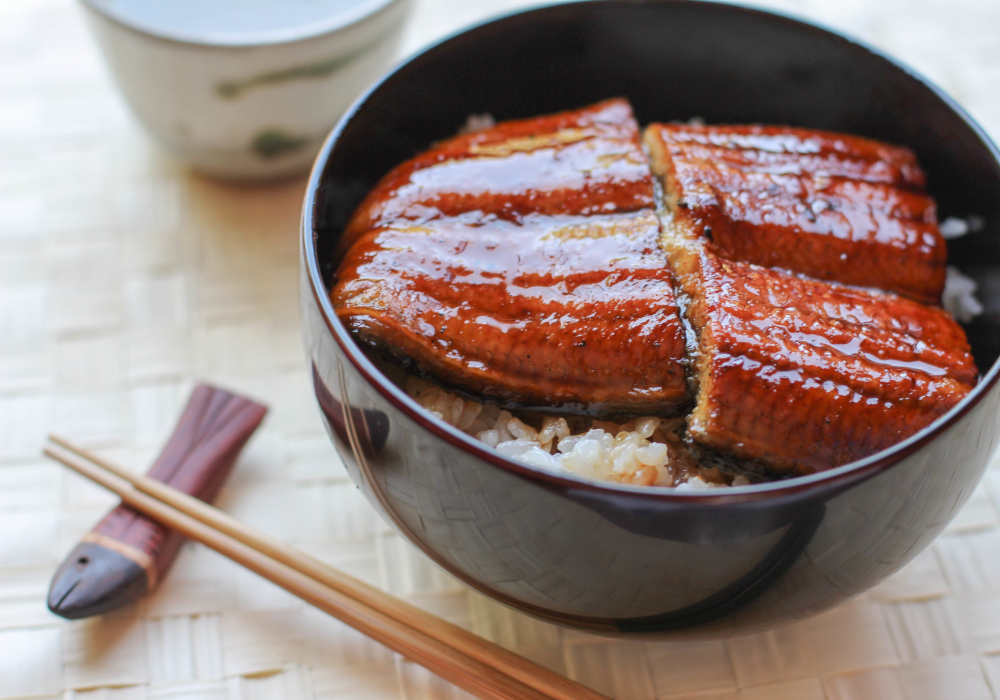

Unagi Don

Unagi Rice Bowl
Unagi is the Japanese word for 'eel',
and this particular one-bowl donburi
dish tops servings of white rice with
fillets of freshly grilled eel, all
seasoned with a homemade unagi sauce.
Prepare on the barbecue during a hot
summer's day, or make on an oven grill
in the evening.
Ingredients
- sugar
- cooking sake
- soy sauce
- mirin
- rice
- water
- eel
Recipe Instructions
- To make the sauce, combine the mirin
and sake in a small saucepan and bring
to the boil. Reduce the heat and add the
sugar, stirring until completely dissolved.
Add the soy sauce and bring to the boil.
Reduce the heat and simmer for 10 mins, or
until the sauce thickens. Turn off the heat
and set aside to cool
- While the sauce is cooling, start cooking and
preparing the rice using your preferred method.
We suggest using 200g rice and 260ml water after
washing the rice
- Preheat your grilling unit to high (about 250°C).
Normally eel fillets come sliced in half lengthwise,
so cut your eel fillets in half width-wise so they can
fit on top of your rice bowl. Line a baking sheet with
aluminium foil. Lay the fillets on top and brush with
vegetable oil. Place on the grilling unit and grill for
5-7 minutes, or until nicely browned
- Take the fillets out of the oven and carefully brush with
the unagi sauce, leaving a little sauce for later. Place the
fillets back on the grilling unit to grill for a further
minute or so, until the sauce starts to bubble on top.
- To serve, Add a serving of cooked rice to an empty bowl.
Brush the top of the rice with the remaining sauce and lay
the unagi fillets on top.
Return to main page